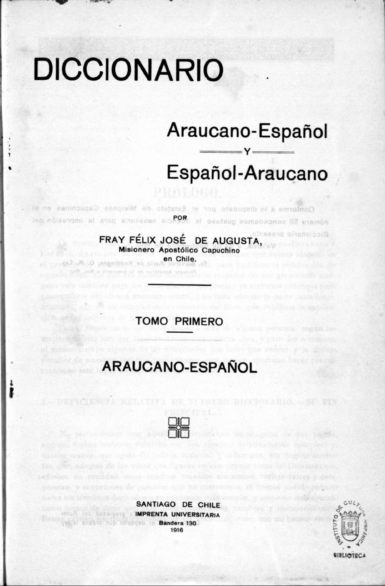

Diccionario Español - Mapudungun y Mapudungun Español de Fray Félix José de Augusta (1916)
Presentación
Acá se contiene el diccionario de Fray Félix José de Augusta, publicado en 1916, en un formato que permite consultar las páginas impresas del original por medio de un menú superior.
Prólogo
I. Deficiencia relativa de nuestro diccionario–Su fin principal
II. Los intérpretes
III. Los dialectos
IV. Fuentes y métodos
V. Colaboración
Advertencias previas para el uso del Diccionario
1. Su superioridad respecto de nuestra gramática
2. ¿En cuánto hay razón de traducir la forma primitiva del vebro araucano por el presente del infinitivo castellano?
3. Verbos transitivos
4. Adiciones o rectificaciones que han de introducirse en nuestra Gramática
Suplemento al Tomo I del Diccionario
Letra A
Letra Ch - Letra D
Letra E - Letra F
Letra Ŋ - Letra I
Letra K
Letra L - Letra Ll
Letra M - Letra N
Letra Ñ - Letra P
Letra R
Letra ʃ - Letra T - Letra Tr
Letra U - Letra W
Letra Ü - Letra Y
Alfabeto Araucano
Signos y Abreviaturas
Erratas del diccionario Mapudungun - Español
Advertencia
Erratas del diccionario Español - Mapudungun
Prólogo
Prólogo
1. Deficiencia relativa de nuestro diccionario. –Su fin principal.
II. Los intérpretes
III. Los Dialectos
IV. Fuentes y método
V. Colaboracióno
Advertencias previas
1. Su superioridad respecto de nuestra gramática
2. ¿En cuánto hay razón de traducir la forma primitiva del vebro araucano por el presente del infinitivo castellano?
3. Verbos transitivos
4. Adiciones o rectificaciones que han de introducirse en nuestra Gramática
Suplemento al Tomo I del Diccionario Araucano-Español
Letra A
Letra Ch - Letra D
Letra E - Letra F
Letra Ŋ - Letra I
Letra K
Letra L - Letra Ll
Letra M - Letra N